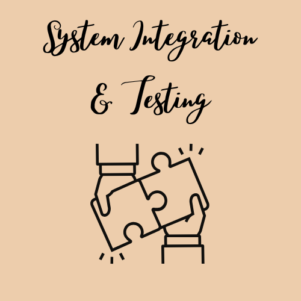

HELLO, WORLD!
INTEL HDA AUDIO DRIVER
TAOS Operating System Project
Audio Driver Development in Rust
Part of a custom operating system developed at the University of Texas at Austin
Key Contributions:
- Designed and implemented a fully operational audio driver conforming to the Intel High Definition Audio (HDA) specification
- Developed the capability to parse and play audio directly from WAV files stored in a custom-built
- Established robust communication with audio hardware to detect codecs, configure pins, and trace valid playback paths
- Built a DMA-based streaming system with optimized memory handling and dual-buffer descriptor list switching for uninterrupted playback
- Validated functionality through iterative testing using QEMU-based virtualization and low-level debugging techniques
COMPONENTS
HDA Driver Initialization
Set up the Intel High Definition Audio controller from scratch...
Read MoreCodec and Widget Discovery
Probed the audio codec to discover its internal widget structure—pins, DACs, mixers, and converters—and traced signal paths to establish valid audio output routes.
Read More
Command and Response Handling
Implemented a CORB (Command Output Ring Buffer) and RIRB (Response Input Ring Buffer) system to send standard HDA verbs to the codec and receive responses asynchronously.
Read More
Audio Stream Configuration
Configured playback stream parameters such as buffer size, stream format, sample rate, and channels. Mapped audio output from the codec pin to the DAC and activated the audio engine.
Read More
WAV File Parsing
Created a custom parser to read WAV audio files from the OS’s EXT2-based file system. Extracted metadata like sample rate and bit depth for dynamic playback configuration.
Read More
DMA-Based Audio Playback
Implemented Direct Memory Access (DMA) streaming using a circular buffer to deliver real-time audio to the hardware. Managed memory ownership and synchronization for smooth playback.
Read More
Interrupt Handling
Set up hardware interrupts for stream status updates and implemented a polling fallback mechanism. Enabled real-time feedback during audio streaming through link position tracking.
Read More

System Integration & Testing
Integrated the audio driver into a multi-core operating system kernel. Verified functionality using QEMU and conducted waveform playback tests to validate end-to-end audio support.
Read More